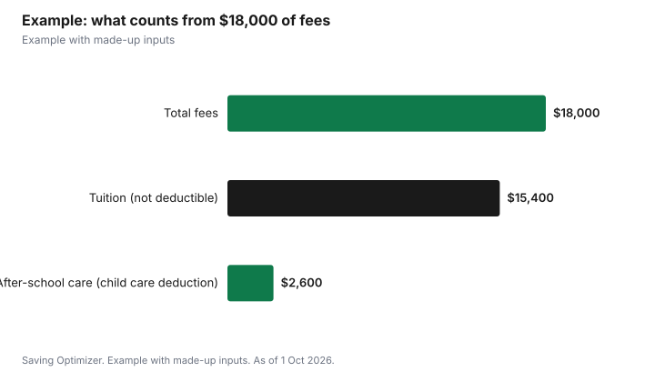

Education · Canada
Is Private School Tuition Tax Deductible in Canada? The Four Exceptions
No, regular tuition at a private elementary or high school is not tax deductible in Canada, and it does not qualify for the tuition tax credit, which covers post-secondary courses and certain occupational skills courses for people 16 or older. There are four narrower exceptions. The part of a school's fees for child care, such as before- and after-school care, can count toward the child care expense deduction, as can boarding school costs within limits. Some schools that teach religion can issue a charitable receipt for part of what you pay. And a school for a child with a mental or physical impairment can qualify as a medical expense if it is certified in writing.
Key takeaways
- Regular private K-12 tuition is not deductible and is not eligible tuition.
- Child care portions of school fees can count toward the child care expense deduction.
- Boarding schools and overnight camps with lodging are listed as child care, subject to limits on Form T778.
- Some religious schools can receipt part of what you pay as a donation.
- A certified school for a child with an impairment can be a medical expense.
- Example with made-up inputs: $18,000 of fees, of which $2,600 of after-care counts.
Why regular tuition does not qualify
The CRA's tuition tax credit applies to courses at a post-secondary educational institution, or, for people 16 or older developing skills for an occupation, at an institution certified by the federal minister of Employment and Social Development. Elementary and secondary school programs do not fit either category, so private school tuition is not eligible tuition, no matter how much it costs. There is also no general deduction for school fees.
The child care expense deduction does not fill the gap. The CRA lists fees for education at an educational institution, such as tuition for a regular program or a sports study program, among the expenses you cannot claim as child care. Fees for leisure activities such as lessons are also excluded.
| Cost | Possible treatment |
|---|---|
| Regular day school tuition (K-12) | Not deductible; not eligible tuition |
| Before- and after-school care billed by the school | Child care expense deduction, for the child care part |
| Boarding school lodging | Child care expense deduction, subject to the limits on Form T778 |
| Religious instruction at some schools | Charitable donation receipt for part of the payment, under the CRA's rules |
| School for a child with an impairment, certified in writing | Medical expense credit |
| Uniforms, transportation, trips and lessons | Not deductible |
Exception 1: the child care part of school fees
The CRA says you can include payments to educational institutions for the part of the fees that relates to child care services. If a private school bills separately for early drop-off, after-school care or a school-run day camp in the summer, that part can count. The usual child care rules apply: the care must let you or your spouse earn income, go to school or do research under a grant, the child must have been under 16 at some time in the year (or have a mental or physical infirmity), and generally the spouse with the lower net income makes the claim. Ask the school for a receipt that separates the child care amount from tuition.
Exception 2: boarding schools
The CRA lists boarding schools, overnight sports schools and camps where lodging is involved among the payments you may include, and points to a note in Part A of Form T778 for how much counts. That note sets out how much of these costs can count, so a boarding school's full fees may exceed what you can deduct. Read the current T778 instructions before you count on a figure.
Exception 3: religious schools and donation receipts
The CRA's long-standing circular on schools that provide religious education, IC75-23, sets out two cases. If a school teaches exclusively religion and is a registered charity, payments for students attending it are treated as donations, not tuition, and can be receipted. If a school provides both secular (academic) and religious education, it can issue a donation receipt only for the part of a payment above the cost per pupil of the secular program, if it tracks that cost separately, or above the cost per pupil of the whole school if it does not. Payments for academic tuition are never a gift, because you receive education in return.
| Type of school | Donation receipt possible? |
|---|---|
| Teaches exclusively religion, registered charity | Yes, payments are treated as donations |
| Secular and religious, separates secular costs | Only for the part above the secular cost per pupil |
| Secular and religious, does not separate costs | Only for the part above the whole-school cost per pupil |
| Secular school only | No |
In practice, the school does this calculation from its own books and decides whether it can issue a receipt, so ask before you count on one. A gift from someone with no child at the school who gets nothing in return can qualify in full.
Exception 4: schools for children with impairments
The CRA's list of medical expenses includes the cost of a school, institution or other place for a person with a mental or physical impairment. An appropriately qualified person, such as a medical practitioner or the school's principal or head, must certify in writing that the school's specially provided equipment, facilities or staff are needed because of the person's impairment. If they are, the fees can be claimed as medical expenses on your return. Keep the certification with your records.
Example with made-up inputs
These numbers are an example with made-up inputs. The Martins pay a private day school $18,000 a year for their 9-year-old: $15,400 of tuition and $2,600 for after-school care so both parents can work. The school issues a separate receipt for the after-care. The lower-income parent claims the $2,600 under the child care expense deduction, within the limits on Form T778. The $15,400 of tuition is not deductible and is not eligible tuition. The school is secular, so no donation receipt applies.
| Item | Amount | Tax treatment |
|---|---|---|
| Tuition | $15,400 | Not deductible |
| After-school care | $2,600 | Child care expense deduction |
| Donation receipt | $0 | Secular school |
| Total fees | $18,000 | $2,600 potentially claimable |

Steps
- Ask the school to show child care, boarding and tuition as separate items on your receipt.
- Claim the child care part on Form T778, usually on the lower-income parent's return.
- If the school teaches religion, ask whether it issues donation receipts under IC75-23.
- If your child has an impairment, ask the school whether it can provide the written certification.
- Do not claim regular tuition as tuition or child care.
- Keep receipts and certifications in case the CRA asks.
For saving for later education, see capturing the CESG in an RESP and paying for university without an RESP.
Sources
- Canada Revenue Agency, Eligible tuition fees and Guide P105 Students and Income Tax 2025, canada.ca (Wayback copies), as of 1 Oct 2026.
- Canada Revenue Agency, Line 21400 Child care expenses, Expenses you can claim, canada.ca (Wayback copy of the page modified 29 Jan 2026), as of 1 Oct 2026.
- Canada Revenue Agency, IC75-23 Tuition Fees and Charitable Donations Paid to Privately Supported Secular and Religious Schools, canada.ca (Wayback copy), as of 1 Oct 2026.
- Canada Revenue Agency, Details of medical expenses (school for persons with a mental or physical impairment), canada.ca (Wayback copy), as of 1 Oct 2026.
- The family's fees and details in the example are an example with made-up inputs.
Frequently asked questions
Is private school tuition tax deductible in Canada?
No. Regular elementary and secondary tuition is not deductible and is not eligible for the tuition tax credit.
Can I claim private school fees as child care?
Only the part of the fees for child care services, such as before- and after-school care. Tuition for a regular program is excluded.
Can I claim boarding school as child care?
Boarding schools and camps where lodging is involved are listed as child care, but the amount that counts is limited; see the note in Part A of Form T778.
Can a religious school give me a donation receipt?
Possibly. Under IC75-23, a school that teaches only religion can receipt payments, and a school with both programs can receipt only the part above its cost per pupil.
Can private school be a medical expense?
Yes, if it is a school for a person with a mental or physical impairment and an appropriately qualified person certifies the need in writing.
Does private high school qualify for the tuition tax credit?
No. The credit covers post-secondary courses, and occupational skills courses at certified institutions for people 16 or older.
Researched and drafted with AI assistance and fact-checked against official Canadian sources. How we create content.
Disclosure: Saving Optimizer may earn a commission if a partner link is added later, such as a tax software offer type. No partnership is claimed on this page. Education only, not tax advice.